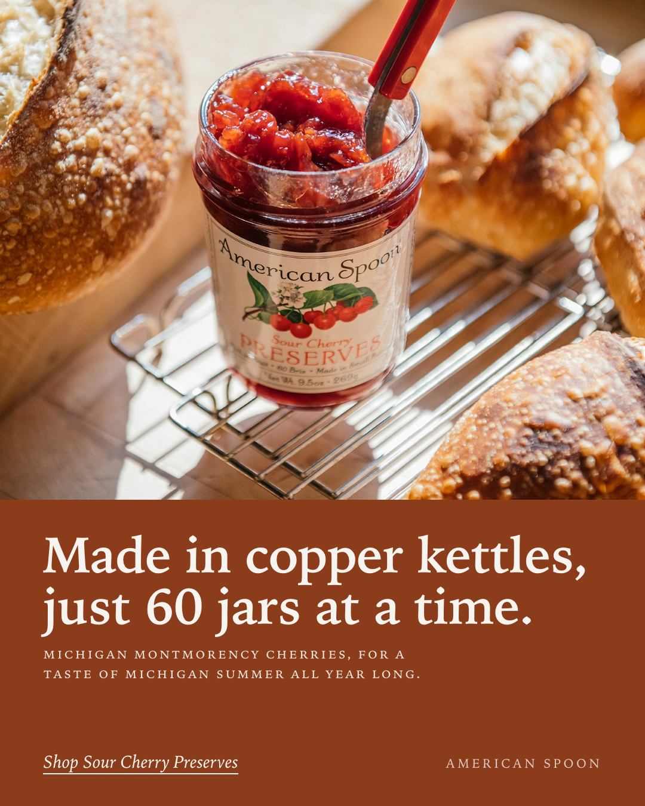

An ad for American Spoon
Your own photo and your own line, built as a static. Nothing on it that isn't already on your site.
Download the file · Reply to Alex

Made by Alex Hickey · Splitframe Studio · splitframestudio.com

Your own photo and your own line, built as a static. Nothing on it that isn't already on your site.
Download the file · Reply to Alex
Made by Alex Hickey · Splitframe Studio · splitframestudio.com